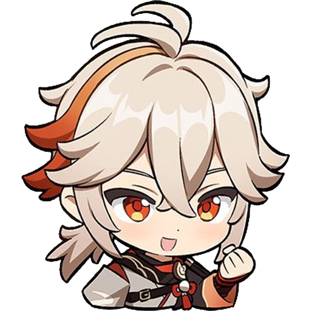

Welcome, travellers, to the amazing world of Teyvat! Today we'll journey through this land, and explore how the limited 5-star characters in Genshin Impact affect the game's banner sales.
So let’s find some more ways that Hoyoverse (the creator of Genshin Impact) can maximize their profit even more from their character banners, by looking at all the 5-star character banners and spiral abyss patterns to see what it tells us, even though they make millions a month already.
Did you know that on avarage each character banner makes roughly around $18.3 million, while only lasting for 20 days? That's a lot of money if you think about it. If you do that math that means Genshin makes $330 million a year from banner sells alone!
Here is a graph that shows how much money Genshin has made with each verison patch all the way up to 4.0.
This would mean that the more time the character has appear in a banner, the more money the character has made overall. Here is are 2 graphs that showcasse the total amount of time that a character has reappear in a banner and the total they money they made since their release.
From these graph we can see that most character has made a appearanace in the limited banner for at least 3 time, and on avarage a character makes a total of $51.57 million.
This supports the claim since we can see that characters who has made an appearanace more than 3 times make more money than the avarage total a character would make. While characters who has made an apperance less than 3 times make less money than the avarage total a character would make.
This claim can be seen and heavily implied by the characters Tartaglia and Cyno.


Tartaglia has have 5 appearanaces on the 5-star limited banner and has made a total of $55,671,528.
While Cyno has only 2 appearanaces on the 5-star limited banner and only has made a total of $32,250,069.
This makes sense since the more times the character makes an appearance, the more chances the players have trying to get that character, which leads to spending more money since the character banner only lasts for a limited amount of days.
Another way that 5-star characters correlates with Genshin Impact's banner revenue, is their usuage rate in Spriral Abyss. Here is a graph that shows the overall aravage abyss usuage rate of each limited 5-star character.
As we can see from the graph, characters with a higher avarage abyss usage rate (%38.10 or above) make more money than the avarage total, while a character with a lower avarage abyss usage rate (%38.10 or lower) would make less money than the avarage total.
This claim can be seen and heavily implied by the characters Kazuha and Eula.


Kazuha has an average usage rate of 75.9% making in total $52,075,519.
While Eula has an average usage rate of 11% and making in total $36,103,644.
This makes sense since higher usage rate requires the player to have the character to use it, which means some people would have to spend money to get the character.
So then what should Genshin do in order to make more money? Well currently I believe there are currently two main changes they can do to increase their revenue.
The first option is for them to introduce triple banners, which means they have 3 limited 5-star banners running at the same time. This way the avarage waiting time would be lower, allowing the players to wait less to get the character that they want. Allowing them to have a chance to spend more money to get the character that they want.
The second option is giving updates and buffs to older characters in the game. This way character feels newer and nicer to play with, which will increase the character abyss usage rates, allowing more players to want that specific characters.